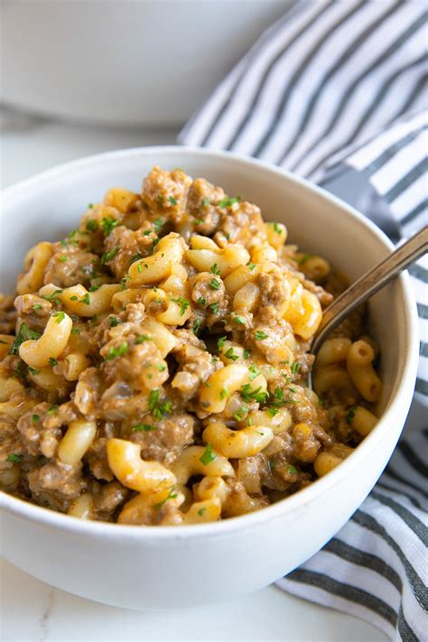

Hamburger Helper

Ingredients:
-
1 lb ground beef
-
2 tbsp ketchup (or lard)
-
2 tsp Dijon mustard
-
2 tsp hot sauce (your favourite kind)
-
2 tsp garlic powder
-
2 tsp onion powder
-
1 tsp seasoned salt
-
1 tsp salt
-
1 tsp pepper
-
2 cups pasta, macaroni, uncooked
-
3 cups broth (or water)
-
1/2 cup sour cream
-
2 cups cheddar cheese, shredded
Instructions:
- Cook ground beef in a skillet until no longer pink. Drain grease and return meat to pan.
- Reduce heat to low and add ketchup, mustard, hot sauce, seasonings, raw macaroni, and broth. Stir well to combine.
- Cover and simmer 12-15 minutes or until macaroni is cooked through.
- Remove pan from heat and stir in sour cream.
- Return pan to warm burner and stir in cheese. Mix until well combined.
← Back to Recipes